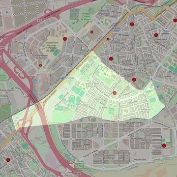

Santo Domingo de la Calzada
- Arciprestazgo
- Alcorcón
- Población
- Alcorcón
- Dirección postal
- c/ Los Pinos, 9
- Código postal
- 28922
- Extensión
- 2,05 km² (205 ha)
- Teléfono
- 916 101 007
- Correo electrónico
- sto.domingo@outlook.es
- Información demográfica
- De la parroquia · De la población (Alcorcón) · Del arciprestazgo (Alcorcón)


Descargar mapaLímites según decreto
"Partiendo del punto donde confluyen las calles Los Robles y Cisneros con la Avenida Pablo Iglesias, arrancan por una línea imaginaria (en dirección noroeste) hasta el encuentro con el ferrocarril Madrid-Móstoles (C-5); siguen por el eje de las vías del ferrocarril hasta el límite del término municipal Alcorcón-Móstoles (en dirección suroeste), por el límite de los términos municipales Alcorcón-Móstoles y Alcorcón-Fuenlabrada (en dirección sureste y noreste), por el eje de la calle Parque Ferial (en dirección noroeste), por una línea imaginaria (en dirección noroeste) hasta la avenida del Oeste, por el eje de la Avenida del Oeste (en dirección suroeste y noroeste), por detrás de los colegios públicos “Carmen Conde” y Sánchez Albornoz” (en dirección oeste), por el eje de la calle Los Robles (en dirección noroeste) hasta el punto donde confluye con la calle Cisneros y con la Avenida Pablo Iglesias, punto de partida". (Decreto de actualización de límites. 21-6-2005. B.O. de julio-agosto de 2005. pág. 807)